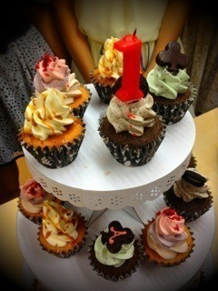
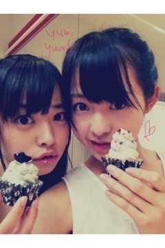

| 2012/08 21 Tue | 211回目*marika |
いつも読んでくださってる方、
初めて読んでくださった方、
コメントしてくださった方、
ありがとうございます。
お台場合衆国！
めざましライブ！

今日21日で結成一周年を迎えた
乃木坂46スペシャルでした。
参加曲は
♪会いたかったかもしれない
♪走れ！Bicycle
♪人はなぜ走るのか？
♪ぐるぐるカーテン
♪おいでシャンプー
♪乃木坂の詩
33人全員そろったし、
たくさんの乃木坂familyの前で
8曲も披露することができて
嬉しかったです><
結成日に素晴らしい舞台に
立つ機会をくださって
ありがとうございました。
そして、みなさん
コメントありがとうございました。‼
涙腺ゆるんでまうよ

みなさんは私にとって
本当に大きな存在です。
今日のライブでも
声聞こえたし、ちゃんとわかったよ！
全部嬉しかったよーーーー
暑い中来てくださって
ありがとうございました

**********
 よくブログにコメントしてくれる
よくブログにコメントしてくれる
人の名前覚えてたりするの？？
 はい
はい
 みんなから呼ばれてる名前は？
基本まりか
みんなから呼ばれてる名前は？
基本まりか

かなからはまりちゃ
最近ゆったんからはべびか
生駒、えりか、川後からはべびたん
ときどきまりか
...もうすきに呼べええぇえ
好きなor乗りたい車はある？
車は詳しくないなぁ
**********
ライブ後はささやかな
打ち上げをしました。
最終オーディションの映像
見たりなんかもしました...
なんか...みんな変わったなぁ。
初心忘るべからず
ケーキ！

かわいいカップケーキ

おにゃのこはこんなのがだいすき。
一周年の1と乃木坂46の46
のろうそく付きのケーキが
ふたつでしたーかわいいかわいい

ねねかわいいな
明日も頑張りまりか！
まりか
コメント(137)
2012/08/21 21:06